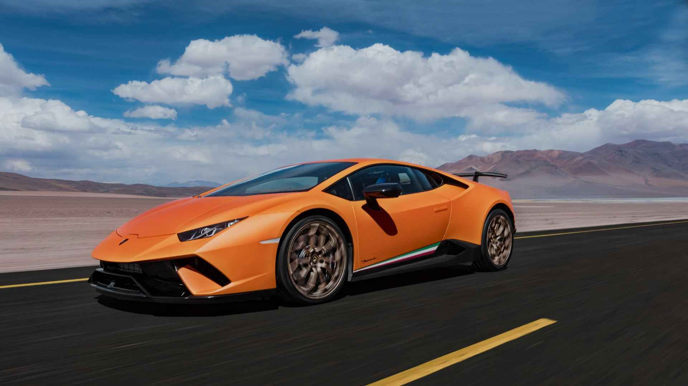

Performance & Speed

The Lamborghini Huracán features a 5.2L naturally aspirated V10 engine producing up to 640 hp. With a seven-speed dual-clutch transmission, it reaches 0–100 km/h in just 2.9 seconds. The Performante model enhances aerodynamics, boosting downforce by 750%.
Technological Advancements

The LDVI system actively adjusts vehicle dynamics in real time. With magnetorheological suspension and rear-wheel steering, the Huracán offers unparalleled control at any speed.
Legacy & Success
The Huracán dominated motorsports with the GT3 Evo, winning multiple championships. Its lightweight carbon-aluminum chassis and advanced aerodynamics make it a track legend.
Predecessors: The Evolution of Lamborghini V10s
The Huracán follows a lineage of high-performance Lamborghini V10s, starting with the Gallardo in 2003. The Gallardo's innovations in lightweight chassis design and transmission systems paved the way for the Huracán’s superior performance and handling.